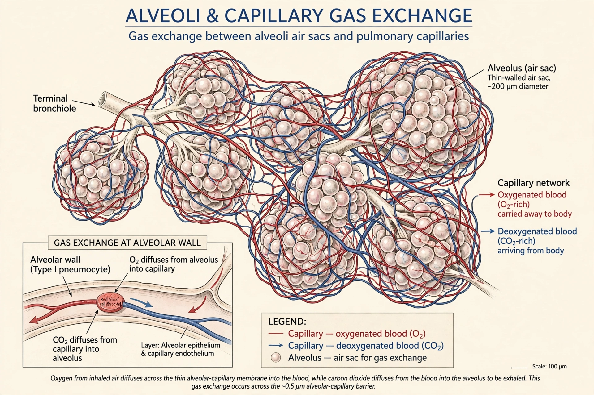

Alveolus
| Pulmonary alveolus | |
|---|---|
 | |
| Alveoli and their capillary network, the site of gas exchange | |
| System | Respiratory system |
| Location | Lungs, at the ends of the respiratory tree |
| Function | Exchange of oxygen and carbon dioxide with the blood |
A pulmonary alveolus (plural: alveoli, from Latin alveolus, "little cavity"), also known as an air sac or air space, is one of millions of hollow, distensible cup-shaped cavities in the lungs where pulmonary gas exchange takes place. Oxygen is exchanged for carbon dioxide through the blood–air barrier formed by the alveolar and capillary walls, which together form the respiratory membrane.
Structure
The human lungs contain roughly 300 to 500 million alveoli, each about 0.2–0.3 mm in diameter, giving a total internal surface area estimated at 70 to 140 square metres. Alveoli are clustered in sacs at the ends of bronchioles and are wrapped in a dense network of capillaries. Their walls contain two principal cell types: flat type I pneumocytes, across which gas diffuses, and cuboidal type II pneumocytes, which secrete pulmonary surfactant that reduces surface tension and prevents collapse. Alveolar macrophages patrol the air spaces and remove inhaled particles and pathogens.
Function and disease
Each breath brings oxygen-rich air into the alveoli, where oxygen diffuses into the blood and carbon dioxide diffuses out to be exhaled. Diseases affecting the alveoli include pneumonia (in which they fill with inflammatory fluid), emphysema (in which their walls break down, reducing surface area), pulmonary edema, and acute respiratory distress syndrome.